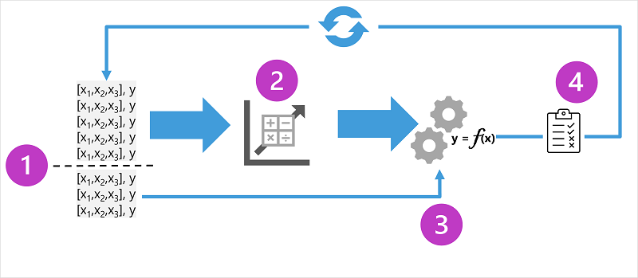

🤖💡 What’s Machine Learning?
Machine learning is like when computers learn from data so they can make smart guesses — kind of like how we learn from experience!

🧠Who’s Involved?
It’s a team-up between:
- Data Scientists 🧪: They explore and clean up the data, then train the AI to recognize patterns.
- Software Developers 💻: They take that trained AI and plug it into apps so it can make predictions in real life!
🔁 How It Works:
- Feed the AI lots of data 🍕📊
- Train it to spot patterns 🐧
- Use it in apps to make smart predictions — like guessing what you’ll type next or spotting a cat in a photo 🐱
This last step is called inferencing — it’s when the AI uses what it learned to make real-time decisions!
🧠Where It Comes From
ML started with math and stats — using numbers and patterns to figure things out.
The big idea? Use past data to guess what might happen next!
🔍 Real-Life Examples
-
🦠Ice Cream Shop
An app looks at past sales + weather to guess how many ice creams will sell today. -
🩺 Doctor’s Tool
AI checks patient data to predict if someone might be at risk for diabetes. -
🧠Penguin Research
AI uses bird measurements to figure out which species it is — Adelie, Gentoo, or Chinstrap!
🧪 How Machine Learning Works
ML is like building a smart calculator that turns inputs into predictions.

🧩 Step 1: Training

We give the AI a bunch of examples:
- Features (x) = the stuff we know (like weather, weight, flipper size)
- Label (y) = the thing we want to predict (like sales, risk level, penguin type)
Example:
x = [temperature, rainfall, windspeed] y = ice cream sales
The AI learns a function — let’s call it f — that connects x to y: y = f(x)
🔮 Step 2: Inferencing
Once trained, the AI can take new x values and guess y — this guess is called ŷ (aka “y-hat†ğŸ©).
Example: ŷ = 120 ice creams 🍦
💡 Summary
- Machine Learning = Smart guessing powered by data + math
- It learns patterns, builds a function, and makes predictions — all inside your apps!
🧠Types of Machine Learning
Machine learning comes in different styles — like different game modes 🎮. You pick the one that fits what you're trying to predict!

📠Supervised Learning
This is when the AI learns from examples that include both: - Features (x) = the stuff we know - Labels (y) = the answer we want it to learn
🔢 Regression
Predicts a number — like how many ice creams will sell or how fast a car goes.
Examples: - 🦠Ice cream sales based on weather - ğŸ House price based on size and location - 🚗 Car fuel efficiency based on engine size and weight
🧪 Classification
Predicts a category — like yes/no or which type of penguin 🐧.
✅ Binary Classification
Only two options — like true/false or yes/no.
Examples: - 🩺 Is a patient at risk for diabetes? - 💳 Will a customer default on a loan? - 📬 Will someone respond to a marketing email?
🯠Multiclass Classification
More than two categories, but only one correct answer.
Examples: - 🧠Penguin species: Adelie, Gentoo, or Chinstrap - 🬠Movie genre: Comedy, Horror, Romance, etc.
🏷️ Multilabel Classification
Sometimes, more than one label fits!
Example: - 🥠A movie could be both Sci-Fi and Comedy
🧩 Unsupervised Learning
Here, the AI only gets features (x) — no labels. It figures out patterns on its own!
🧠Clustering
Groups similar things together — like sorting socks 🧦 by color and size.
Examples: - 🌸 Grouping flowers by petal size and shape - 🛍️ Segmenting customers by shopping habits
Clustering is like classification, but without knowing the categories ahead of time.
You can even use clustering to find categories before training a classifier!
🔠How It All Connects
Sometimes you: 1. Use clustering to find patterns 2. Label those patterns 3. Train a classification model to predict future labels
🤖 What is Regression?
Regression is like teaching AI to guess numbers based on patterns it sees in past data.
It’s part of supervised learning, which means the AI learns from examples that include both:
- Features (x) = the stuff we know (like temperature)
- Labels (y) = the number we want to predict (like ice cream sales)

🧠How AI Learns to Predict: 4 Simple Steps
1. 🲠Split the Data
Break your data into two parts: - Training data to teach the AI - Validation data to test how well it learned
2. 🧠Train the Model
Use an algorithm (like linear regression) to find patterns in the training data and build a model.
3. 🧪 Test the Model
Use the validation data to make predictions and see how close the AI’s guesses (ŷ) are to the real answers (y).
4. 📠Measure & Improve
Compare the predicted answers to the real ones.
Use metrics (like MAE, MSE, RMSE, or R²) to see how accurate the model is.
Then tweak the algorithm or settings and repeat until it’s awesome!
And that’s how AI gets smarter with every loop! 🔁
📊 Visual Example
Imagine a scatter plot with dots showing how many ice creams were sold at different temperatures.
The regression line goes through the middle of the dots, showing the trend.
🧪 Part 2: Evaluating a Regression Model
Once your model is trained, it’s time to test how well it works!
🧾 Step 1: Use the Validation Data
We saved some data earlier — now we use it to: - Make predictions using the model - Compare those predictions to the real answers
Example:
| Temperature (x) | Actual Sales (y) | Predicted Sales (ŷ) |
|---|---|---|
| 52 | 0 | 2 |
| 67 | 14 | 17 |
| 70 | 23 | 20 |
| 73 | 22 | 23 |
| 78 | 26 | 28 |
| 83 | 36 | 33 |
📠How Do We Measure Accuracy?
1. MAE (Mean Absolute Error)
Average of how far off the predictions were — no matter if too high or too low.
🧮 Example: MAE = 2.33 ice creams
2. MSE (Mean Squared Error)
Like MAE, but it squares the errors — so big mistakes count more.
🧮 Example: MSE = 6
3. RMSE (Root Mean Squared Error)
The square root of MSE — gives us the error in real units (like ice creams!).
🧮 Example: RMSE = 2.45 ice creams
4. R² (R-Squared)
Tells us how much of the pattern the model explains.
- 1 = perfect prediction
- 0 = no better than guessing
🧮 Example: R² = 0.95 (which is awesome!)
🔠Keep Improving!
To get the best model, data scientists try different things: - 🧠Choose better features - 🔧 Try different algorithms - ⚙️ Tweak the settings (called hyperparameters)
They repeat the process until the model is accurate enough to use in the real world!
🧠Binary Classification
🯠What’s Binary Classification?
Imagine teaching a robot to answer yes or no questions. That’s binary classification. It’s like giving the robot a bunch of examples and asking it to guess if something is true (1) or false (0).
Instead of guessing numbers (like in regression), the robot guesses probabilities — like “I’m 70% sure this person has diabetes.”
🧪 Training the Robot
We give it data like this:
| Blood Glucose (x) | Diabetic? (y) |
|---|---|
| 67 | 0 |
| 103 | 1 |
| 114 | 1 |
| 72 | 0 |
| 116 | 1 |
| 65 | 0 |
Then we use a smart math trick called logistic regression to draw an S-shaped curve (called a sigmoid) that helps the robot decide.
🤖 The Robot’s Brain (Function)
f(x) = P(y = 1 | x)
This means: “What’s the chance y is 1 (true) given x?”
If the robot sees a glucose level of 90 and the curve says 0.9 (90%), it predicts yes — this person probably has diabetes.
🧪 Testing the Robot
We test it with new data:
| Blood Glucose (x) | Diabetic? (y) |
|---|---|
| 66 | 0 |
| 107 | 1 |
| 112 | 1 |
| 71 | 0 |
| 87 | 1 |
| 89 | 1 |
The robot makes predictions (ŷ), and we compare them to the real answers (y).
📊 Confusion Matrix (aka Scoreboard)
| Actual (y) | Predicted (ŷ) | Result |
|---|---|---|
| 0 | 0 | ✅ True Negative |
| 1 | 1 | ✅ True Positive |
| 1 | 1 | ✅ True Positive |
| 0 | 0 | ✅ True Negative |
| 1 | 0 | ⌠False Negative |
| 1 | 1 | ✅ True Positive |
📈 Metrics That Matter
🯠Accuracy
How often the robot gets it right:
Accuracy = (TP + TN) / Total = (3 + 2) / 6 = 0.83
🔠Recall
How many actual diabetics the robot found:
Recall = TP / (TP + FN) = 3 / (3 + 1) = 0.75
🯠Precision
How many predicted diabetics were actually diabetic:
Precision = TP / (TP + FP) = 3 / (3 + 0) = 1.0
🧮 F1-Score
Combo of precision and recall:
F1 = (2 × Precision × Recall) / (Precision + Recall) = 0.86
📉 ROC Curve & AUC
We plot how good the robot is at guessing across all thresholds. A perfect robot gets an AUC of 1.0. Random guessing gets 0.5.
Our robot? AUC = 0.875 🎉
That means it’s way better than guessing!
🧠TL;DR
Binary classification is like teaching a robot to say yes or no based on data. We train it, test it, and score it using metrics like accuracy, recall, precision, and AUC. The better the scores, the smarter the robot!
🧠Multiclass Classification – Level Up Your ML Game 🎮
🚀 What’s the Vibe?
Multiclass classification is like giving your model the power to choose between more than two options. Instead of just “yes†or “no,†it’s like “Adelie,†“Gentoo,†or “Chinstrap.†🧠It’s part of the supervised ML squad, just like regression and binary classification. You train it, validate it, and test it — classic ML grind.
🧊 Penguin Example (Because Penguins Are Cool)
We’ve got penguins, and we’re checking out their flipper lengths (📏). Based on that, we wanna guess their species:
0: Adelie1: Gentoo2: Chinstrap
| Flipper Length (x) | Species (y) |
|---|---|
| 167 | 0 |
| 172 | 0 |
| 225 | 2 |
| 197 | 1 |
| 189 | 1 |
| 232 | 2 |
| 158 | 0 |
Note: Real-world data would have more features, but we’re keeping it chill with just one.
ğŸ› ï¸ How Do We Train This Thing?
We’ve got two main ways to train a multiclass model:
1. One-vs-Rest (OvR)
Train a separate binary classifier for each class. Each one says, “Is this my class or not?”
f0(x) = P(y=0 | x)f1(x) = P(y=1 | x)f2(x) = P(y=2 | x)
Whichever one gives the highest probability wins. 🏆
2. Multinomial (aka Softmax Squad)
One model, one function, all the probs:
Example output: [0.2, 0.3, 0.5] → Class 2 wins.
📊 Time to Evaluate
Let’s see how our model did on some new penguins:
| Flipper Length (x) | Actual (y) | Predicted (ŷ) |
|---|---|---|
| 165 | 0 | 0 |
| 171 | 0 | 0 |
| 205 | 2 | 1 |
| 195 | 1 | 1 |
| 183 | 1 | 1 |
| 221 | 2 | 2 |
| 214 | 2 | 2 |
🔠Confusion Matrix Vibes
| Class | TP | TN | FP | FN | Accuracy | Recall | Precision | F1-Score |
|---|---|---|---|---|---|---|---|---|
| 0 | 2 | 5 | 0 | 0 | 1.00 | 1.00 | 1.00 | 1.00 |
| 1 | 2 | 4 | 1 | 0 | 0.86 | 1.00 | 0.67 | 0.80 |
| 2 | 2 | 4 | 0 | 1 | 0.86 | 0.67 | 1.00 | 0.80 |
📈 Overall Stats
- Accuracy: (13 + 6) ÷ (13 + 6 + 1 + 1) = 0.90
- Recall: 6 ÷ (6 + 1) = 0.86
- Precision: 6 ÷ (6 + 1) = 0.86
- F1-Score: (2 × 0.86 × 0.86) ÷ (0.86 + 0.86) = 0.86
🉠TL;DR
Multiclass classification = your model picking the best label from a bunch. Whether it’s OvR or softmax, it’s all about those probabilities. And when it’s done right? You get stats that slap. 💥
🧠Clustering – Group Vibes Only 🌸
🤖 What’s Clustering All About?
Clustering is like sorting your playlist by vibe instead of genre. 🧠It’s unsupervised ML, which means no labels, no rules — just grouping stuff based on how similar it is. The model doesn’t know what the “right†answer is. It just finds patterns and builds squads (aka clusters) based on features.
🌼 Flower Power Example
Imagine you’re a botanist checking out flowers. You count how many leaves and petals each one has:
| Leaves (x₁) | Petals (x₂) |
|---|---|
| 0 | 5 |
| 0 | 6 |
| 1 | 3 |
| 1 | 3 |
| 1 | 6 |
| 1 | 8 |
| 2 | 3 |
| 2 | 7 |
| 2 | 8 |
No labels, no species — just raw data. The goal? Group similar flowers together based on leaf and petal counts. 🌿🌸
ğŸ› ï¸ Training the Model – K-Means Style
One of the go-to clustering algorithms is K-Means. Here’s how it rolls:
- Vectorize the features → Turn each flower into a point in space:
[x₁, x₂]. - Pick your number of clusters (k) → Say you want 3 squads, set
k = 3. - Drop random centroids → These are the squad leaders.
- Assign each flower to the closest centroid → Squad up!
- Move centroids to the center of their squad → Based on average distance.
- Reassign flowers if needed → If they vibe more with another squad.
- Repeat until stable → Or hit max iterations.
🎞️ Imagine an animation where flowers keep switching squads until everyone’s chill.

{kind=link}
{kind=link}
📊 Evaluating the Squad Game
Since there’s no “correct†label, we judge clustering by how tight and separate the squads are. Here’s how:
- Avg distance to cluster center → How close each flower is to its squad leader.
- Avg distance to other centers → How far it is from other squads.
- Max distance to cluster center → The outlier in the squad.
- Silhouette score → From -1 to 1. Closer to 1 = better squad vibes.
🉠TL;DR
Clustering = unsupervised squad building. No labels, just vibes. K-Means helps group similar data points, and we measure how good the squads are by how close and separate they are. 🌈
🧠Deep Learning – Brain Mode Activated 🧬
🤖 What Is Deep Learning?
Deep learning is like giving your computer a mini brain. 🧠It uses artificial neural networks to learn stuff — kinda like how our brains fire signals, but with math instead of electricity.
| 🧬 Real Brain | 💻 AI Brain |
|---|---|
| Neurons fire signals | Neurons = math functions with weights |
| Signals pass to other neurons | Outputs pass through activation functions |
These networks have layers on layers of neurons — that’s why it’s called deep learning. You can use it for all kinds of ML tasks: regression, classification, NLP, computer vision — basically, it’s the superhero of ML. 🦸‍♂️
🧠Penguin Classifier Example
Let’s say we wanna ID penguin species using deep learning. We feed in some penguin stats:
- Bill length
- Bill depth
- Flipper length
- Weight
So our input vector is:
And we’re trying to predict the species:
0: Adelie1: Gentoo2: Chinstrap
The output is a vector of probabilities:
🧪 Example Run
Input:
Output:
Prediction: Class 1 → Gentoo 🐧
🧠How Does It Learn?
Training a neural network = teaching it to get better at guessing. Here’s the vibe:
- Start with random weights (w)
- Feed training data (x) through the network
- Get predictions (ŷ)
- Compare with actual labels (y) using a loss function
- Calculate how wrong it was
- Use math magic (gradient descent) to tweak the weights
- Repeat over multiple rounds (epochs) until it’s 🔥
🧪 Example Loss
Predicted:
Actual:
Loss = difference =
The model uses this info to adjust weights and get better next time.
⚡ Pro Tip
Neural networks don’t train one case at a time — they batch data into matrices and use linear algebra to crunch numbers fast. That’s why we use GPUs — they’re built for this kind of heavy lifting. 💪
🉠TL;DR
Deep learning = brain-like ML using layers of neurons. It learns by tweaking weights to reduce errors and gets better with each round. Perfect for complex stuff like image recognition, language, and yes — penguins. 🐧💥
🤖 Transformers – The Real MVPs of AI 💬
🧠What’s the Deal?
Transformers are the tech behind all the cool generative AI stuff — like ChatGPT, Bing Chat, and more. They’re built for natural language processing (NLP) and can do things like:
- 💬 Understand vibes (sentiment)
- 📚 Summarize stuff
- 🔠Compare meanings
- ✍️ Generate new text
They’re super smart because they’ve been trained on massive amounts of text. The secret sauce? A special architecture called the Transformer.
🏗️ Transformer Architecture 101
Transformers have two main parts:
- Encoder → Understands the input text
- Decoder → Generates new text
They break down text into tokens (like words or parts of words), then use a technique called attention to figure out which words matter most. The result? Super smart predictions that sound human.
🔠Example Flow
Input: "When my dog was"
Output: "a puppy" 🐶
🧩 Tokenization – Breaking It Down
First step: split text into tokens. Example:
Tokens:
- I → 1
- heard → 2
- a → 3
- dog → 4
- bark → 5
- loudly → 6
- at → 7
- cat → 8
So the sentence becomes:
As training continues, more tokens get added:
- meow → 9
- skateboard → 10
- …and so on
🧠Embeddings – Giving Tokens Meaning
Token IDs are cool, but they don’t tell us what words mean. That’s where embeddings come in — they’re vectors (like [10, 3, 1]) that represent the semantic meaning of a token.
Example:
Vectors for “dog,†“cat,†and “puppy†point in similar directions → they’re semantically linked. “Skateboard� Totally different vibe. 🛹
👀 Attention – What Words Matter Most?
Attention layers help the model figure out which words in a sentence are most important. It’s like giving each word a spotlight based on context.
🔠Self-Attention
In the encoder:
- “bark†in “dog bark†≠“bark†in “tree bark”
- Context changes meaning → embeddings adapt
In the decoder:
- Predicts the next word based on what’s already been said
- Example:
🧠Positional Encoding
Each token gets a position tag so the model knows the order:
🔄 Multi-Head Attention – Supercharged Predictions
Instead of one attention score, the model calculates multiple scores using different parts of the embeddings. Then a neural network picks the best next token.
The process repeats:
1. Predict next token
2. Add it to the sequence
3. Use the updated sequence to predict the next one
4. Keep going until the sentence is complete
🧪 Training vs. Inferencing
During training:
- The model knows the full sentence
- It masks future tokens and learns by comparing predictions to actual tokens
- Adjusts weights to reduce errors (loss)
During inferencing:
- The model uses what it’s learned to predict new text
- No peeking ahead — just vibes and math
✨ Why Transformers Are 🔥
Models like GPT-4 are trained on huge datasets and use this transformer magic to generate text that feels human. It’s not “thinking†— it’s just really good at predicting what comes next.
So when you type a prompt, it responds with a completion that makes sense — thanks to embeddings, attention, and a massive vocabulary.
🉠TL;DR
Transformers = the brains behind generative AI.
They tokenize text, embed meaning, use attention to focus, and generate smart responses.
It’s not magic — it’s math, data, and a whole lotta training. 💥
🧪 Module Assessment
1️⃣ You want to create a model to predict the cost of heating an office building based on its size in square feet and the number of employees working there. What kind of machine learning problem is this?
- Regression
- Classification
- Clustering
2️⃣ You need to evaluate a classification model. Which metric can you use?
- Mean squared error (MSE)
- Precision
- Silhouette
3️⃣ In deep learning, what is the purpose of a loss function?
- To remove data for which no known label values are provided
- To evaluate the aggregate difference between predicted and actual label values
- To calculate the cost of training a neural network rather than a statistical model